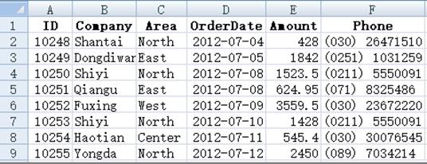
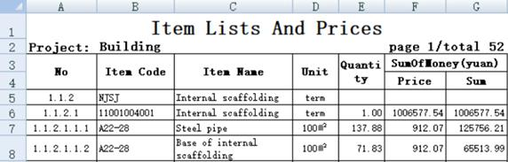
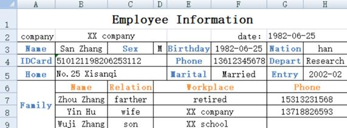
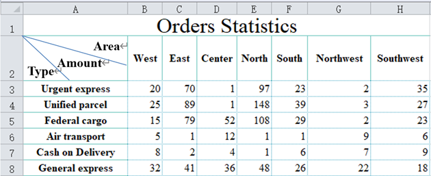
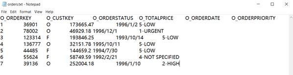
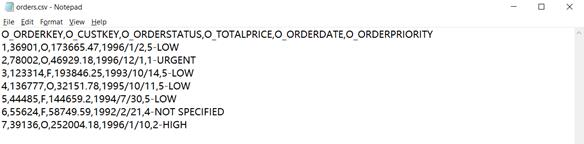

8.1 Structured data
From this chapter, we begin to learn the tabular data and its processing methods that we deal with every day in our daily work.
In the previous example of merging Excel files, we have seen this kind of table:

The first row is the title, explaining what is stored in each column. Each row is an item of data, which may correspond to a person, an organization, an order, an event. ¡
This kind of data has a professional term, which is called structured data. This is the most common data type in modern data processing.
The data of the whole table is referred to as a data table, in which each row (except the title) is called a record, the column is called a field, and the string in the title is called a field name. There are 9 records in the visible part of the above table, corresponding to row 2 to 10 of the Excel; There are also six fields. The field names are ID, Company, Area, OrderDate, Amount and Phone. Field names are different from each other and can uniquely identify a column. These fields (including name and order) are called the data structure of the data table, or structure for short.
Structured data is data with data structure.
A2:F9 in the table is the data in the data table. We will say what is the value of a field of a record. For example, the ID field of the second record is 10248, and the area field of the eighth record is "Center". Each field of each record in the data table will have a value.
Note that only fields in the data table have names, and records have no names. We will talk about how to identify and distinguish records later.
There can be various data tables, and the data structure of different data tables can of course be different. A data table must have a set of data structure, and there can only be one. Sometimes we also say the record structure, which means the structure of the data table where the record is located.
Because structured data is often presented in the form of this row-column style table, we will also intuitively call records and fields rows and columns. This is a common term in the database industry, not a popular term invented in this book. Even, sometimes there are no obvious rows and columns when the data table is presented (we will talk about such an example soon), people still use the terms row and column to represent record and field.
Structured data in the form of tables is very common in reality, and most readers will have this experience. It is not difficult to understand the concepts of records and fields by looking at a table. We won't give more examples here.
However, structured data is not always presented in the form of the above table, it may also be something else.
For example:

The data from row 5 can be regarded as a data table, but what are the fields? It seems that the contents in row 3 and 4 are the field names, but the string with a space in the middle, Item Code, is usually not suitable for the field name (in fact, SPL supports it, but it is rarely used, and this book does not intend to cover it), and it is unclear whether the field names in columns F and G on the right are the contents of F4 and G4.
In fact, the contents of row 3 and 4 here can only be regarded as a description of the fields. The real data structure (mainly the field name) is not necessarily the content of the title row seen in the table, but can also be described and set separately.
There is also this form:

This is no longer in the form of row-column table, but it can still form a data table with 2 records. The fields can be ID, Name, Sex, Position, Birthday, Phone, Address and Postcode.
So, what is structured data and data table?
Look at the above examples. The data in the same Excel describes the same kind of things, such as a person, an order, etc. These things have the same attributes. For example, people have common attributes such as Name,Sex,Birthday, and orders also have common attributes such as customer, date and amount. Each thing is a record, and these attributes are fields. A batch of things with the same attributes constitute a data table, that is, the data table has multiple records and fields.
Data table, record and field are abstract concepts, which essentially correspond to something and its attributes. They are not the same as the Excel table. The data table does not have a fixed rendering style that must be observed, but for easy recognition, it is usually rendered as a row-column table and filled with field names in the title.
For the data in Excel table, as long as the attributes used to describe a certain kind of things can be extracted, and if there are multiple similar things with the same attributes, it can be considered as structured data. As for what the title content of the table is, whether there is a title, or even whether the table is in row-column form, it is not an important factor. The key is only whether a class of things with (common) attributes is described.
Look at another table:

Can we find structured data from here? In other words, can we extract things described by attributes?
Yes, but there are two data tables here. The first is in the upper part, describing the basic information of an employee, and the fields include Name, Sex, Birthday, Nation, IDCard, ¡; The second is in the lower part, describing the employee's family members, and the fields include Name, Relation, Workplace, Phone. Employees themselves and family members are two different things with different attributes. A data table can only have one set of data structure and can only describe one kind of things. To fully describe the information of an employee, two data tables (employee and family members) are required.
There is another case like this:

This looks like a row table, and it should be easy to extract structured data. But what is the data structure?
Simply put, we can take each column as a field name, that is, Type, West, East, ¡. This is indeed a method, but it is not convenient. The computing ability of structured data in the direction of rows and columns (records and fields) is different. When we want to calculate the sum of various regions, it is troublesome to list the fields one by one, while the statistics on records is much easier.
In order to facilitate statistics, for this cross table, we usually design a data table with three fields: Type, Area, Amount. In this way, the statistics in both directions will be relatively simple, and if necessary, the table can be displayed in another way. For example, put Area on the row and Type on the column, which does not affect the data structure.
However, to design the structure like above is not inevitable. It should be determined according to the calculation objectives of the next step. Sometimes it is still designed as Type, West, East, ¡, which will be more convenient.
To find out structured data from chaotic tables, we call this work structure analysis. It is not a very obvious and easy task. We need to design a reasonable data structure according to different conditions and objectives. Structure analysis is also a very important work. If the data is not structured, it is difficult to implement further calculation, and the data that cannot be calculated is meaningless.
Of course, structured data is not always stored as Excel files (conversely, the data stored in Excel is not always structured data). In fact, the most structured data is stored in the database. However, the knowledge of database is too professional to be covered in this book.
In daily work, in addition to Excel files, text files are also commonly used to store structured data. There are two common formats: txt and csv. Text files usually correspond to one record per line. Usually, the first line will be the title, usually the field names. The columns of txt files are separated by tabs(\t), while csv files are separated by commas.

A txt file separated by tab

A csv file separated by comma
The text file is obviously not as neat as Excel in display, but it will not cause the field dislocation of the record.